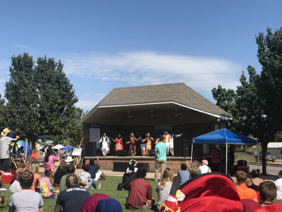

密苏里科技大学EMC Lab暑研 第十一周
文 | 张中洋
温馨有趣的一周。
周五在导师Pommorenke家举行了一次火锅party，参与者有我们Lab的一些博士生、实习生，以及MST大学中和小帕熟识的一些中国学生，以及其儿子的一些同学。小帕有两个女儿、一个儿子，他们各自都选择在自己喜欢的填空下走着自己的路：小帕的儿子十分阳光活泼，预计留在美国继续学业；大女儿会说法语德语和英语，和男朋友在一起；而小女儿酷爱读书，喜欢在图书馆呆着，由于认为美国的医生太过重视钱而不足够关心人，她在下周四即将前往德国追求其理想中的医者仁心。小帕和其小女儿都能够说一口流利的中文，小女儿还在台湾交换留学过一年，可谓一家的中国通。最开始其实我是不太适应这种party的，感觉到的只有身处人群中的孤独，但是渐渐内心的感觉也开始发生了微妙的变化，感觉这也许是一个很棒的事情。最重要的一点是其给了我们一个以工作以外身份示人的机会。大家吃在一起，玩在一起，聊在一起，带来的是食物和酒，带走的是回忆的碎片和美好的瞬间。
周六MST大学举办了一个各国文化节一样的活动，各个国家的国旗飘扬，大家身着各自的民族服饰，在街上举行了盛大的Parade，还有各个国家的学生联合摆摊出来向群众们售卖特色食品，舞台上学生们的纵情高歌起舞，草地上的罗拉群众们悠闲的聊天，共同在这秋日清爽的蓝天暖阳下构筑了一道靓丽的风景线。

周三晚上到了杰弗逊城住下，等待着次日的考试。这次考试并没有考好，原因也很显然，这回并没有做好足够的准备。还是希望下次能够拿出足够的时间准备的。当日去了州立博物馆，那里的穹顶很是恢弘壮观。